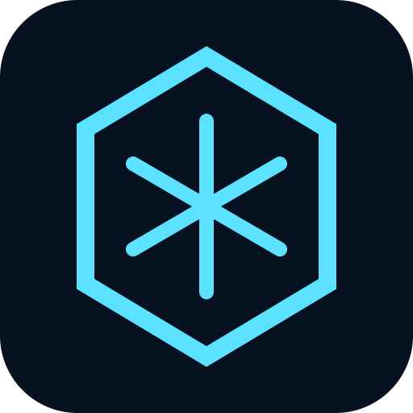

ICEPACIcepac Browser gives you tabs, bookmarks, quick links and a clean icy interface, on your PC and in your pocket.
Simple on purpose, and quick to start.
Open several pages at once and switch between them. Each tab keeps its own history.
Star a page to save it, then find it again on your home screen in one tap.
Create an account to keep your bookmarks together under your own name.
One-tap shortcuts to Google, YouTube, TikTok, Instagram and more.
A Windows installer for your PC, and an install-to-home-screen app for your phone.
The code is public on GitHub. Read it, copy it, improve it.
Pick your device.
The installer isn't code-signed yet, because signing certificates cost money. Windows warns about every unsigned app. Click More info, then Run anyway.
Those sites don't allow themselves to be shown inside another page. In the phone version they open in your browser or their own app instead.
Not yet. The web app works in any modern browser in the meantime.
Bookmarks are stored in your browser. Don't use a password here that you use anywhere else.